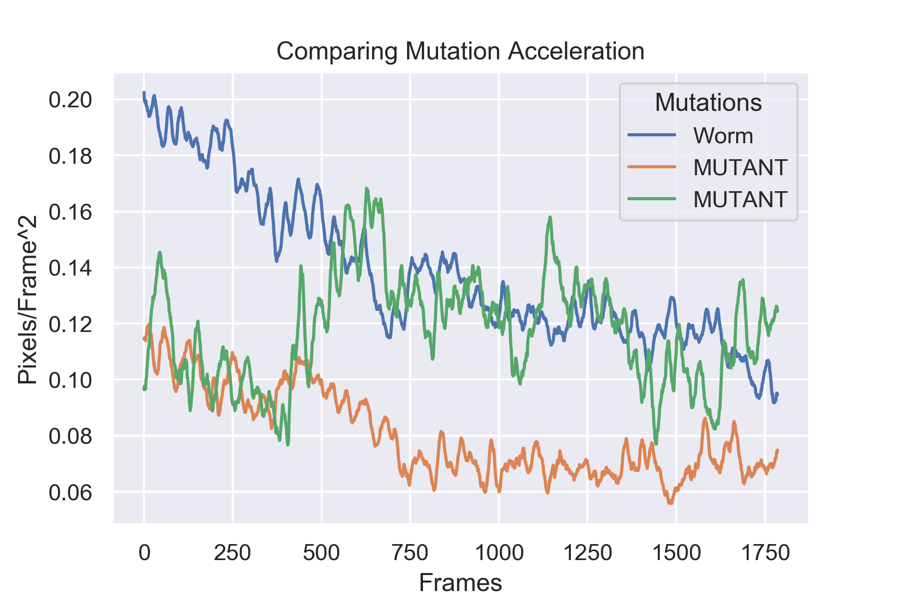

Data Scientist - me@johnbrugman.com - (626) 825-2537
I was approached by a graduate student to help discern the differences between different strains of the C. Elegans worms. Several mutations were made which should have an affect on the movement of the worm, but their current tracking system was not able to tell the difference. Using OpenCV, I tracked the centroid of each worm on a given video, and recorded their locations. By analyzing the speeds and accelerations of these centroids for each mutation, and against the non-mutated (wild type) version, I was able to use ANOVA and T-testing to see if there was statistical significance between their accelerations. It turned out that all mutations were significantly different from the wild-type, and some mutations had unexpected results. This project was able to confirm what was assumed to be true, thus allowing more research to continue with these specific mutations.
There was shown to be a significane between the mutations of C. Elegans vs. the wild-type. This can be seen in the following graph. The blue plot is the wild-type where the acceleration over time slows down. This is because the worm becomes more familiar and tends to move less. The orange and green are two different mutants. They both start out moving much less than the wild-type, and their differences in movement appear as the green mutant moves more, and the orange stays calm. This was predicted behavior, but is now proven. 